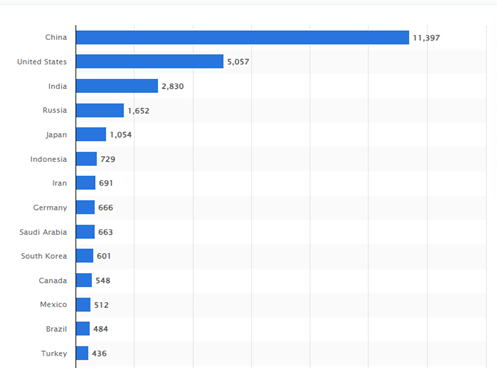

Composto por um átomo de carbono e dois átomos de oxigênio (CO2), o dióxido de carbono é um composto químico gasoso muito importante para a vida na terra, pois desempenha um papel fundamental na fotossíntese e também é importante na respiração dos animais. O CO2 também ajuda a reter o calor vindo do sol na atmosfera terrestre, sendo assim um gás do efeito estufa. Porém a alta concentração de gases do efeito estufa causa um desequilíbrio e consequentemente faz com que a temperatura do planeta aumente.
Com esse gráfico, podemos ver que as emissões começam lá por volta de 1850, coincidindo com o inicio da revolução industrial. A queima de carvão lidera o ranking com quase 15 bilhões de toneladas emitidas em 2019,o petróleo em segundo com aproximadamente 10 bilhões de toneladas emitidas, em seguida o gás natural, e outras fontes.
O setor que mais emitem CO2 no mundo é o setor da geração de eletricidade correspondendo a 42% de todas as emissões. Um exemplo são as usinas termelétricas que utilizam da queima de combustíveis fosseis para transformar o calor em eletricidade, e com isso acabam emitindo grandes quantidades de CO2 na atmosfera. Em seguida temos o setor do transporte que emite dióxido de carbono principalmente através da queima de combustíveis fosseis, como gasolina, diesel e gás natural. Carros, caminhões, aviões e navios são exemplos de meio de transportes que utilizam combustíveis fosseis e emitem CO2. O setor da construção civil e de fabricas também é um dos grandes emissores, o uso de materiais como aço, concreto e cimento libera uma quantidade significativa de CO2. Já o setor residencial acaba emitindo por conta da necessidade de refrigeração, aquecimento e iluminação do ambiente

As emissões por conta da atividade humana continuam aumentando e de acordo com dados recentes, em 2022 foram emitidas mais de 35 bilhões de toneladas de CO2 por todos os países.
Na tabela acima podemos os países que mais emitiram CO2 em 2022 pela queima de combustíveis fosseis (mudança de uso da terra não está incluso). A China é o pais que mais emitiu CO2 em 2022, cerca de 11 bilhões de toneladas de dióxido e carbono, correspondendo a cerca de 32% de todas as emissões. Os Estados Unidos ficam em segundo lugar com mais de 5 bilhões de toneladas emitidas e a Índia em terceiro com 2,8 bilhões. Já o Brasil ocupa a 13° posição, com 484 milhões de toneladas de CO2 emitidas em 2022.
No Brasil, o que mais gera emissões de CO2 é o setor “mudanças de uso da terra e floresta” que engloba desmatamento e queimadas em florestas.
De acordo com o Observatório do Clima, somente em 2022 foi emitido mais de 1 bilhão de toneladas de CO2 por conta da mudança de uso de terra no Brasil. E em segundo lugar o setor de eletricidade gerou mais de 387 milhões de toneladas de gás carbônico.
Como foi citada anteriormente, a alta concentração de gases do efeito estufa causa um desequilíbrio na temperatura do planeta, e como consequência, a temperatura da Terra aumenta. O aumento da temperatura da Terra pode trazer diversas consequências à vida humana e dos animais.
- Ondas de calor são uma das consequências do desequilíbrio da temperatura do planeta. Recentemente, temos sentido o impacto disso na temperatura do Brasil, que vem quebrando recordes de calor;
- Desaparecimento de espécies: com o aumento da temperatura na Terra os ecossistemas possuem suas dinâmicas alteradas e, assim, os seres que neles vivem têm sua vida e hábitos modificados. Alguns, não resistem a mudança e acabam morrendo;
- Eventos extremos, como furacões, chuvas intensas, secas prolongadas são exemplos de como as mudanças climáticas afetam a civilização humana. Nos últimos anos, os países estão fazendo esforços para atenuar o impacto humano no meio ambiente e reduzir as emissões de dióxido de carbono na atmosfera. Um exemplo é o evento COP-30, que reunirá líderes das maiores potências mundiais para discutir as mudanças climáticas em Belém (PA) em 2025. Em 2015, foi definido o objetivo de impedir que a temperatura do planeta aumentasse 1.5 graus em relação à temperatura pré-revolução industrial, o que necessitaria de uma redução das emissões de gases do efeito estufa. Entretanto, apesar de muitos acordos e encontros estarem sendo realizados, as emissões de CO2 continuam aumentando ano após ano. Estimasse que mais da metade de todas as emissões de dióxido de carbono originadas da atividade humana foram realizadas nos últimos 30 anos.